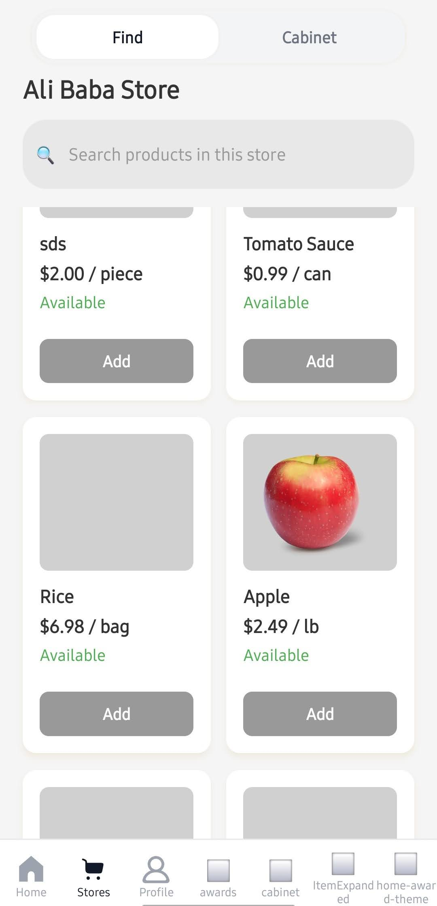

Our Product
Check it out
Your browser does not support the video tag.
Checkout instantly, no waiting—fast and seamless shopping experience.
Table UI.
Making checkout easy.
Your browser does not support the video tag.
App
Allowing you to manage NobelCart purchases from one place.

Development in progress
Trying to make NobelCart more than excellence.